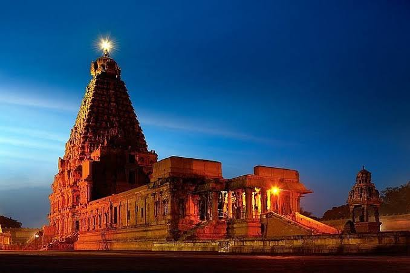

Raja Raja Cholan
Rajaraja I (Middle Tamil: Rajaraja Colan; Classical Sanskrit: Rajaraja Sola; 947 CE – 1014 CE), often described as Rajaraja the Great, was a Chola emperor who reigned the southern parts of India from 985 CE to 1014 CE. An iconic figure and often regarded as the 'King of Kings', he was the most powerful emperor in India during his reign and is remembered for reinstating the Chola influence and ensuring its supremacy acrossm the Indian Ocean. The southern part of India was united for the very first time in the Indian history under his rule.
Early Life

Rajaraja was a son of the Chola king Parantaka II (alias Sundara) and queen Vanavan Mahadevi.According to the Thiruvalangadu copper-plate inscription, his birth name was Arulmoḻi (also transliterated as Arulmozhi) Varman, literally "blessed tongued". He was born around 947 CE in the Aipassi month, on the day of Sadhayam star.He had an elder brother – Aditha II, and an elder sister – Kundavai.
Military conquests

Rajaraja inherited a kingdom whose boundaries were limited to the traditional Chola territory centred around Thanjavur-Tiruchirappalli region. At the time of his ascension, the Chola kingdom was relatively small, and was still recovering from the Rashtrakuta invasions in the preceding years. Rajaraja turned it into an efficiently administered empire which possessed a powerful army and a strong navy. During his reign, the northern kingdom of Vengi became a Chola protectorate, and the Chola influence on the eastern coast extended as far as Kalinga in the north.
Conquest of Sri Lanka

The sinhalese kingdom of Anuradhapura entered into a large scale military uprising due to King Mahinda Vth's disastrous economic organization around 982 AD. The Anuradhapura capital's army was mostly made up of tamil mercenaries brought from corammandel coast. In 882 CE the military uprising of aforementioned merceneries and subsequent civil war peaked forcing weak sinhala king to flee the capital to Rohana principality putting the capital Anuradhapura into a 11 year civil war and complete anarchy. The destruction of the central administration further failed the payments for tamil mercenaries which prompted them to side with chola empire leaving Anuradhapura guardless against the 993 Chola invasion.
Arts and Architecture

Rajaraja embarked on a mission to recover the hymns after hearing short excerpts of Thevaram in his court. He sought the help of Nambi Andar Nambi. It is believed that by divine intervention Nambi found the presence of scripts, in the form of cadijam leaves half eaten by white ants in a chamber inside the second precinct in Thillai Nataraja Temple, Chidambaram.
Brihadisvara Temple
In 1010 CE, Rajaraja built the Brihadisvara Temple in Thanjavur dedicated to Lord Shiva. The temple and the capital acted as a center of both religious and economic activity. It is also known as Periya Kovil, RajaRajeswara Temple and Rajarajeswaram. It is one of the largest temples in India and is an example of Dravidian architecture during the Chola period. The temple turned 1000 years old in 2010. The temple is part of the UNESCO World Heritage Site known as the "Great Living Chola Temples", with the other two being the Gangaikonda Cholapuram and Airavatesvara temple.